AutoEval: Predictive Modeling for Used Car Pricing
Authors
Pavan Yellathakota
Order of Execution
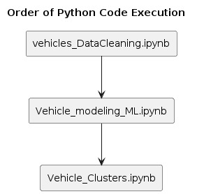
Dataset Overview
- Source: Available on Kaggle.
- Fields Summary: Includes features like
id, region, price, year, manufacturer, model, etc.
- Relevance: Helps compare used car prices based on real Craigslist ads.
Project Objective
- Prediction Target: Selling price of pre-owned cars.
- Applications: Integration with car trading platforms and price estimation tools for individuals.
Project Workflow
Data Cleaning & Preprocessing
Initial dataset: 426,880 rows × 26 columns
Post-cleaning: 71,094 rows × 15 columns
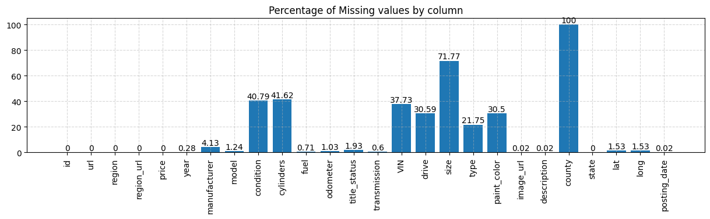
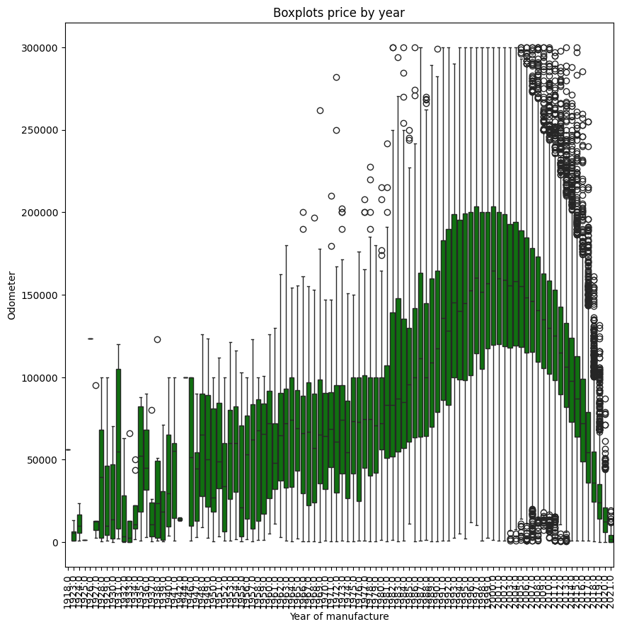
Feature Engineering
- New feature:
car_age
- Encoding: One-hot and Frequency encoding
Exploratory Data Analysis (EDA)
Derived Metric: Odometer_Price_Ratio = Odometer / Price
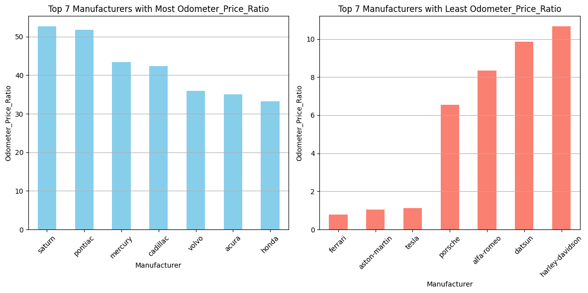
Man_dep_OP: Average manufacturer depreciation per odometer price ratio
- Predictors (X): All engineered and encoded features
- Target (Y): Price
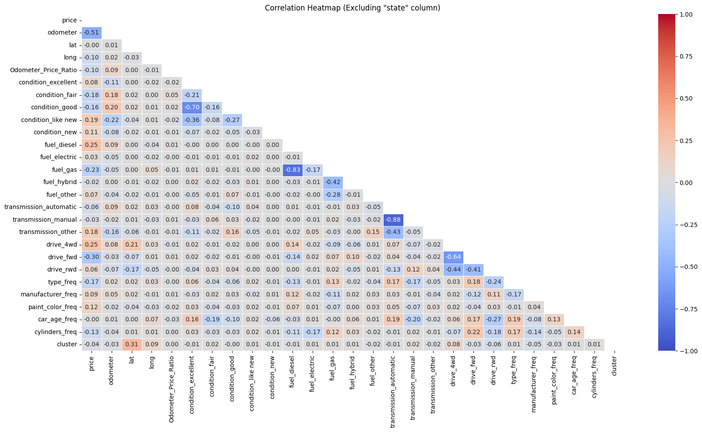
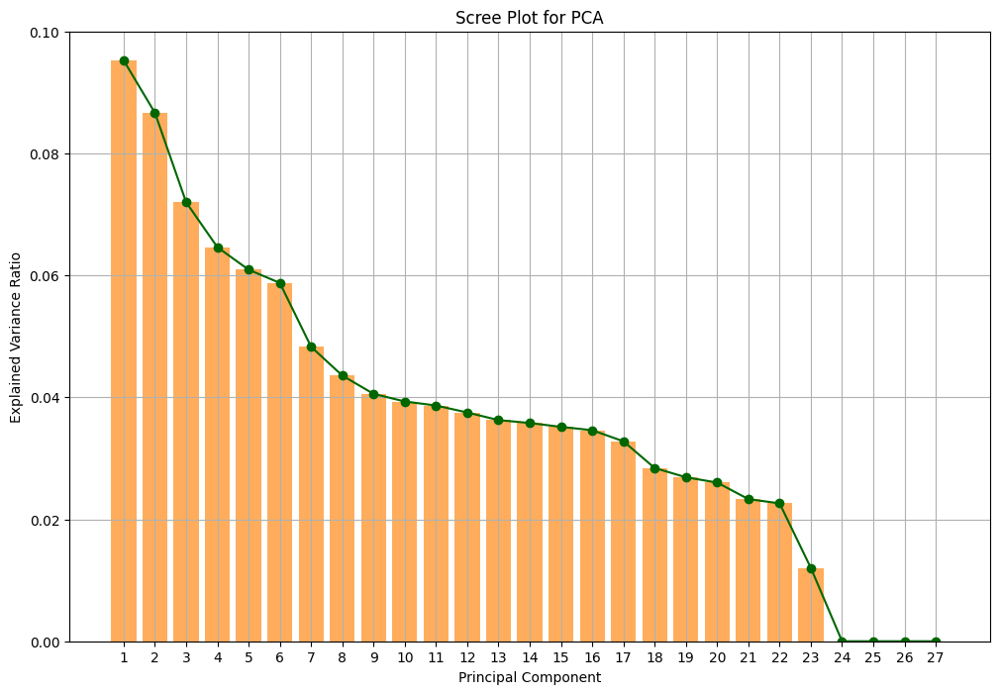
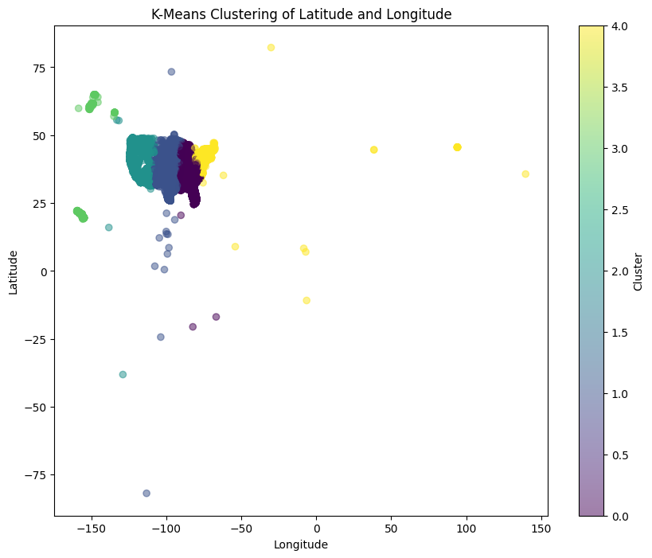
Model Development
- Train/test split: 80/20
- Models: Linear Regression, Decision Tree, Random Forest, XGBoost
Validation and Performance
Metrics used: R², MSE, RMSE
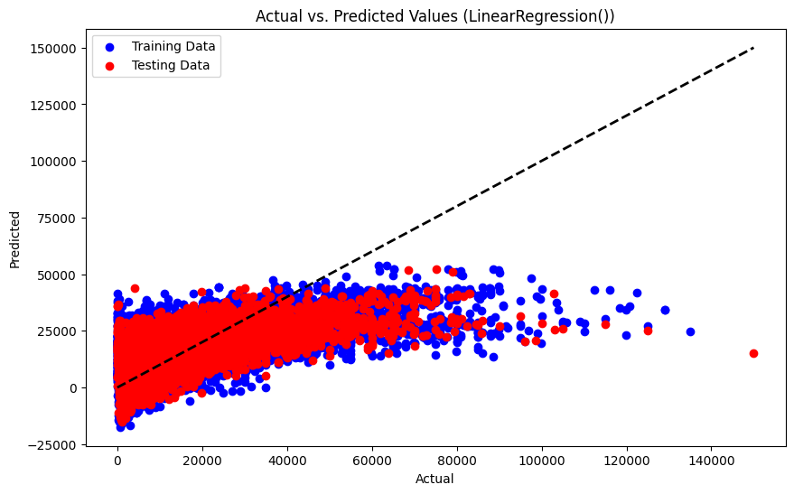
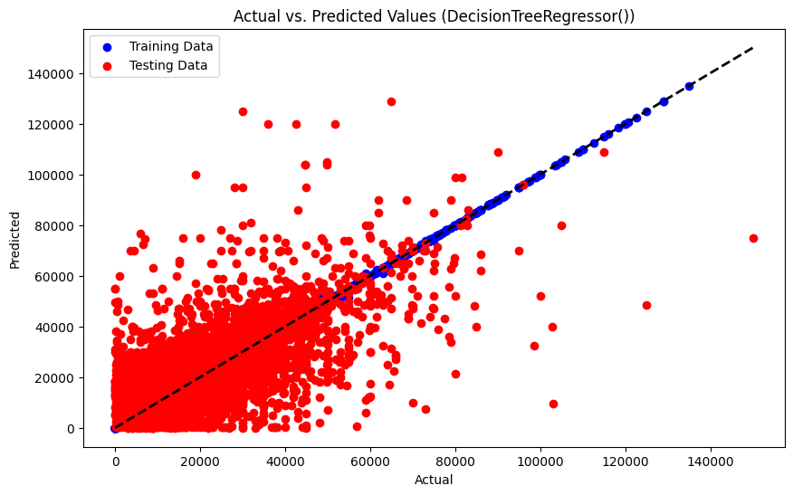
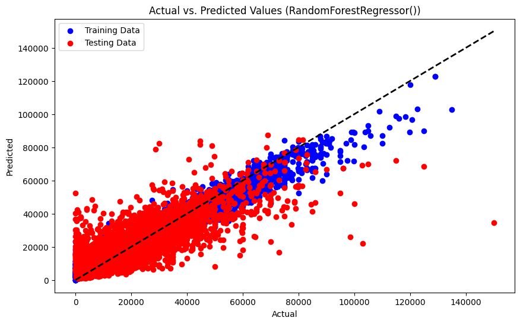
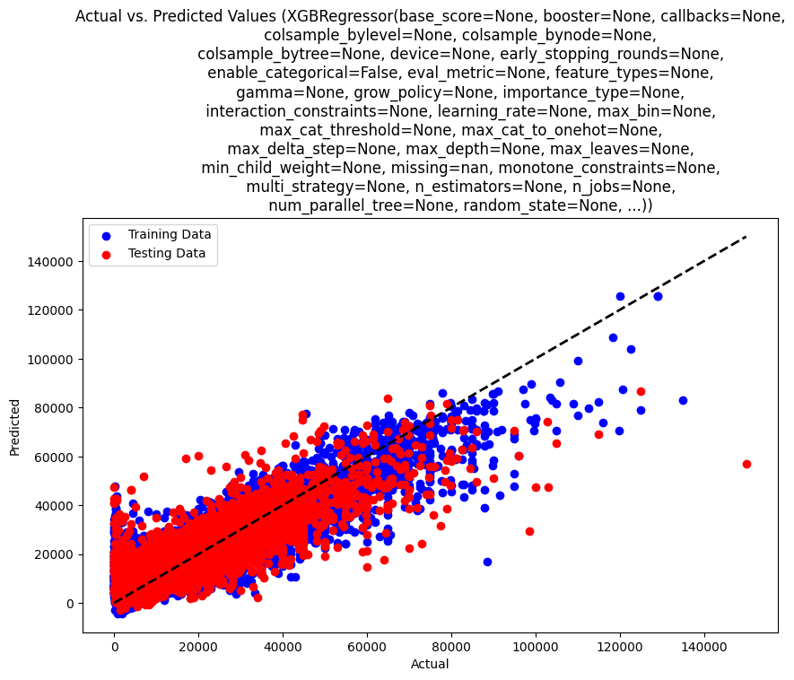
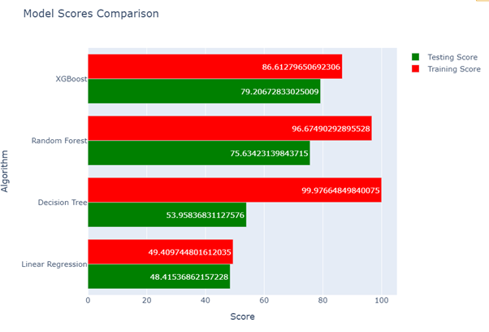
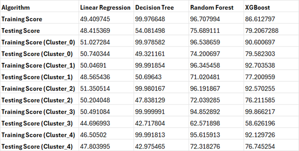
External Test Data
{
'odometer': [95000],
'condition_excellent': [1],
...
'cylinders_freq': [0.359]
}
Predicted Prices:
- Random Forest:
14317.12
- Decision Tree:
14000.00
- XGBoost:
11684.71
- Linear Regression:
12924.74
Production and Deployment
- Integrate into trading platforms
- Useful for car dealers and individual sellers
- Regular retraining recommended
Future Prospects
- Include more robust, real-time data
- Improve prediction using additional economic/vehicle condition metrics
Conclusion
This project showcases the potential of machine learning in evaluating used car prices. Based on the evaluation, Random Forest and XGBoost performed the best. Their consistency across all clusters makes them ideal candidates for deployment.